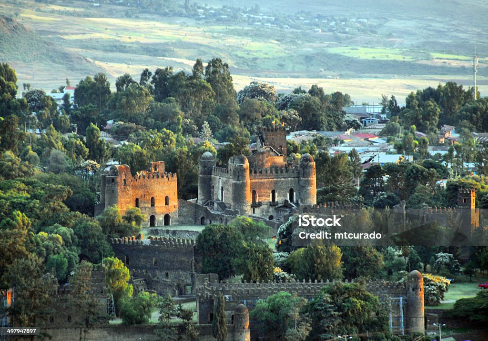
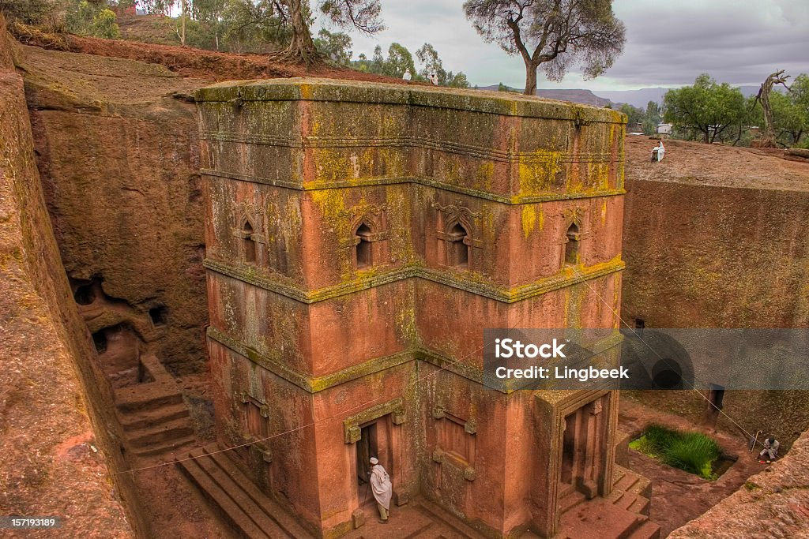
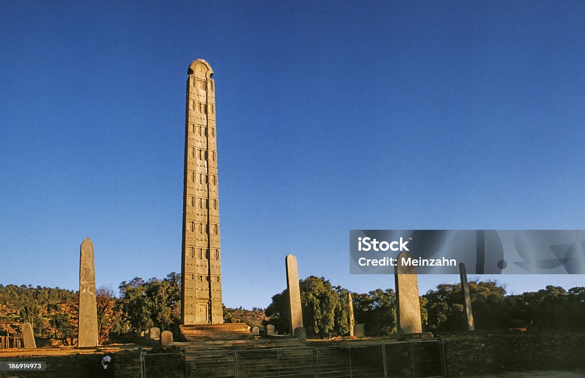

1. Gondar
Gondar is known for its historical castles and royal buildings. It is an important destination for visitors interested in Ethiopian history.

2. Lalibela
Lalibela is famous for its remarkable rock-hewn churches. These historical churches are important religious and cultural attractions in Ethiopia.

3. Axum
Axum is an ancient city known for its historical obelisks and archaeological heritage.

4. Simien Mountains
The Simien Mountains are famous for their dramatic landscapes, mountains and unique wildlife.

Destination Comparison
| Destination | Region | Main Attraction |
|---|---|---|
| Lalibela | Amhara | Rock-hewn Churches |
| Gondar | Amhara | Historical Castles |
| Axum | Tigray | Ancient Obelisks |
| Simien Mountains | Amhara | Natural Landscapes |